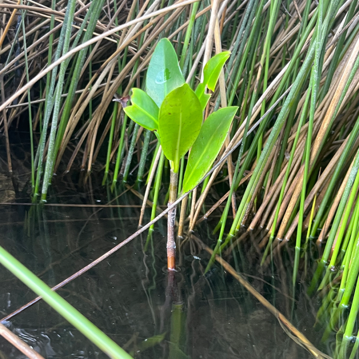

It’s July, a sweaty month in Florida’s most aggressive season, and Rick O’Connor steps into the cold clear water at the kayak and paddleboard launch at Big Lagoon State Park near the coastal city of Pensacola. He steadies his board. Nearby, O’Connor’s 9-year-old grandson waits to push his board into the water. Nearby, grasses stand as tall as the blue heron that wades through them. Birders stand on the boardwalk, pointing out toward the flocks of pelicans that fly by in Vees.
O’Connor glances down to find his footing, and there it is: a red mangrove. One leaf pokes out of the sprout like a bright green flag announcing new territory, surrounded by towering rushes that are a few feet high.
“It was just the propagule with one leaf sticking out of it,” O’Connor said, recalling the moment months later. “How I spotted it, I have no idea.” O’Connor is a county marine extension agent for the University of Florida’s Institute of Food and Agricultural Services in Florida’s northwestern county who has made a career out of studying terrapin turtles and educating the public on local wildlife and flora.
Florida’s $13 billion fishing industries can trace their roots, quite literally, to the mangroves.
Red mangroves—so called because of the color of their tentacled, sprawling roots, which grow above ground and make them look a bit like giant bushes crawling on stilts—are indigenous to southern latitudes. This was not the first time O’Connor had encountered a red mangrove plant this far north and west, but it was the first in a few years. If the red mangrove sprout O’Connor found continues to thrive, especially through the winter, its success paints a picture of change: mangroves marching farther from the equator as the planet warms. It’s not a clearcut story, though, said O’Connor. “There’s different ways of looking at it. Some people see it as good. Some people see it as bad. For a lot of the scientists, it’s a proxy for climate change.”
For the winter, the little red pioneer would test its resilience.
Mangroves” is a word to describe about 80 different species of mangrove trees, often grouped because of their ecological function rather than direct relation to one another. In Florida, it means three kinds: black, red, and white, which all grow around south Florida coasts, the Caribbean, and Central America. Black mangroves—which, along with the whites, secrete filtered salt from their leaves—are more cold-tolerant; these are the ones most successfully wandering northward and along the eastern United States coast. Black mangroves have already established a grove, via spreading of their seed pods, outside Port St. Joe in Florida’s panhandle—some 350 miles northwest of Orlando.
Mangroves provide substantial protection for coastal communities, by slowing storm surge, stabilizing against coastal erosion, and acting as guardians for wildlife. They establish nurseries for innumerable fish—such as baby Goliath groupers, snook, gray snappers, schoolmasters—and homes for crabs, migratory birds, snakes, alligators, and many other creatures. Florida’s $13 billion fishing industries can trace their roots, quite literally, to the mangroves.
The Smithsonian Institution and its departments, such as the Smithsonian Environmental Research Center, track the progression of black, red, and white mangroves up the eastern U.S. The U.S. Fish and Wildlife Service calls them peripatetic plants, which have now reached as far north as Georgia’s eastern coasts.
In their wake, mangroves leave a changed ecosystem. Although they serve as foundations for a certain kind of ecosystem, they also replace native salt marshes, which are coastal wetlands that also protect the shore and act as nurseries for wildlife. They have other drawbacks from some humans’ perspectives: Areas with mangroves emit swampy, sulfuric odors that come from the breakdown of organic matter below them. Mangroves also block views, a regular complaint of people who expect Florida’s shore to be flat all the way to the ocean’s horizon.

WHERE THE RED MANGROVE GROWS:The range of mangrove forests is changing—many scientists see this as a proxy for climate shifts. This red mangrove sprout, spotted by local marine expert Rick O’Connor, is making a new home for its species farther north in Florida than it would usually be found. Photo by CD Davidson-Hiers.
“If you look at this whole cycle, at the importance of salt marshes and why they’re so positive, then flip the page over and see the mangroves, they’re basically the same,” O’Connor said. “The only difference is the plant.”
“This is a really interesting topic that [we’re] trying to understand, especially concerning the future of Florida coastlines, especially how rapid those mangroves can move,” said Yiyang “Calvin” Kang, a Ph.D. student in the University of Florida's School of Natural Resources and Environment where he focuses his research on mangrove ecology. “It could be a totally different coastal landscape in the future, if we’re not working to get climate change under control.” That future could arrive as soon as 2040, he said, interpreting some models that track mangrove progression.
Kang’s interest in the gregarious trees began in his undergraduate studies in subtropical Xiamen, China, to which he had come from his hometown, Beijing. (The climate difference between the two cities is comparable to the difference between New York City and Gainesville, Florida, he said.) At the University of Florida, he focuses on how temperature affects the trees. His research, and understanding the mangrove’s resilience, could help inform decisions about using them to reinforce “living shorelines”—natural, stabilized coastlines—that help protect infrastructure during hurricanes and flooding. One study, published in 2012 by The Nature Conservancy and Wetlands International, demonstrated that mangrove groves could reduce the size and impact of waves by between 13 and 66 percent, depending on the density of the grove. Another study, published in Nature in 2020, found that mangroves could help to reduce U.S. property damages by more than $65 billion, protecting more than 15 million people every year.
“This species is quite amazing,” Kang said. “How they’re able to live in the coastlines, and they’re one of the most efficient species to sequester carbon.” The National Oceanic and Atmospheric Administration, or NOAA, says that mangroves wildly outperform mature tropical forests when it comes to carbon capture, at a rate of nearly 10 times greater. This might be because mangroves store carbon in the soils they help stabilize rather than in their above-ground tissues, thus creating a deeper carbon “sink” for more long term storage.
Mangrove expansion varies continent to continent, and latitude to latitude. In Australia and in Brazil, sea level rise—and other human impacts—are driving mangroves farther inland. Researchers have used satellite imagery to map changes in mangrove ranges to find potentially harmful saltwater intrusion along the northern coast of Brazil. While in South Africa, agricultural practices, such as cattle grazing, and extreme flooding threaten a mass mangrove die-back.
On the Galápagos Islands, mangrove roots knuckle into volcanic stone and begin to grow. Nicolas Moity loves the trees, their initiative and their tenacity. He’s a senior marine ecologist at the Charles Darwin Foundation in the Galápagos.
Mangroves are a colonizing plant, a plant pioneer. A mangrove propagule—a seedling that falls into the water when ripe—can float for weeks or months on ocean currents before happening upon a beach, a shore, or rocky outcropping where, waterlogged, it will sink to the bottom and find some purchase to start growing. Give the propagules five or so years and they can mature into marine wildlife nurseries, stopover points for migrating birds, form islands of their own, cultivate their own soils beneath them, and develop into thriving leafy metropolises.
The Galápagos Islands are home to four species of mangroves—red, black, white, and button—which have particular adaptations to life within the volcanic islands. Moity puzzles through what makes them so successful, and how climate change will continue to affect them in their native ranges. He’s looking into historical ecological data stored in mangroves’ soils to search for clues from the past about what their future might hold.
Mangroves wildly outperform mature tropical forests when it comes to carbon capture.
As far as how a warming planet will impact the Galápagos’ mangroves, scientists predict that the wet and dry seasons, influenced by El Niño’s warm phase and La Niña’s cold phase, will become more frequent and severe. Mangroves can drown in rising seas. They can also dehydrate. Whereas in Florida scientists are documenting a northward expansion of mangroves, in the Galápagos, a change in ocean current systems could prevent the normal distribution of mangrove propagules, ultimately impacting the spread of their native ranges.
Moity said that some of the coastal island trees may rely on an upwelling Cromwell Current in the Pacific that brings with it the nutrients—phosphorous, nitrogen, potassium—the trees use. In a warming climate and with warming oceans, scientists hypothesize, currents will change, threatening the delivery of these key nutrients. A dip in ocean currents might also mean less transportation avenues for mangrove propagules to travel to settle in new areas.
Changing rainfall patterns also impact the island groves. Mangroves rely on underground water supplies collected from runoff from the highlands since the islands have no permanent rivers, which would normally provide mangroves their nutrients, Moity added.
If their environment changes, the mangroves will too, affecting all the creatures that rely on their health, including sharks, fish, sea turtles, birds, crabs, lobsters, and more.
In October, when Iwent to find the baby red mangrove tree near Pensacola, it was already taller than O’Connor described it from his summer encounter. No longer a shoot waving a single leaf, the mangrove sprout now had five bright green leaves forming a crown.
“Wow! Growing leaves!” O’Connor responded when I texted him a photo.
NOAA predicted a warm winter for Florida. The little red mangrove has a decent shot at survival. O’Connor works with a small team of volunteers who will keep an eye on it, though they won’t intervene if it starts to struggle in its small alcove within the rushes just out of the way of the kayak launch.
Science is careful not to declare this one mangrove proof that the climate has warmed enough for red mangroves to make a home at this latitude.
“Mangroves,” Moity said, “show you very well how everything is connected.”
Lead photo by the author
Källförteckning
- Originalartikel: https://nautil.us/march-of-the-mangroves-1199257/